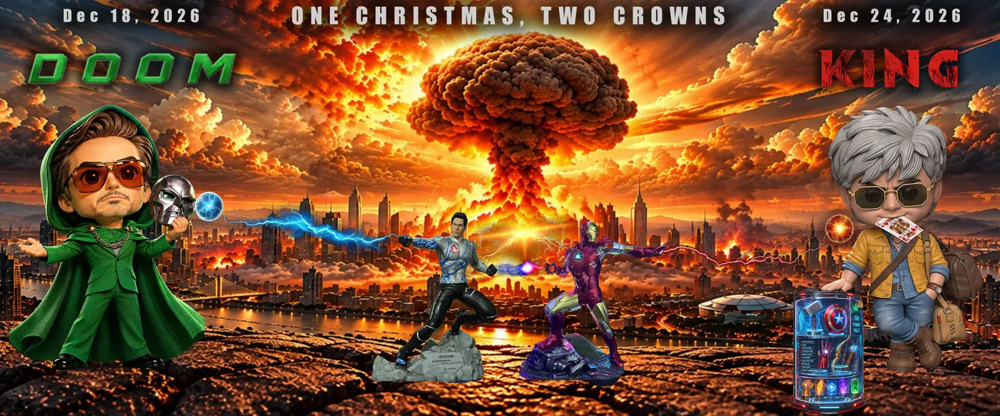

Part VIII · KING: The Royal Flush · 40 of 57
Chapter 38 · DOOM to KING
[image: DOOM to KING: One Christmas, Two Crowns]

DOOM to KING: One Christmas, Two Crowns. (The author’s art for the campaign, agarmainkinghota.com)
Avengers: Doomsday opens on 18 December 2026, with Robert Downey Jr. back at Marvel as its villain, Doctor Doom. KING follows six days later. (Fact. The Hollywood Reporter India; Wikipedia: Avengers: Doomsday) The trade wants a clash. This book reads a relay. (Analysis)
The class of ’65. Robert Downey Jr. was born on 4 April 1965. Shah Rukh Khan was born on 2 November 1965. (Fact) Same year, two hemispheres, two careers that went from boy wonder to written off to the biggest comebacks in their industries. Both once saved the world in a suit, one red, one blue: Iron Man in 2008, built in a cave from a box of scraps; G.One in 2011, stepping out of a video game his creator built for his son. This Christmas, at 61, both walk to the dark side of the screen. Retirement plans: not found. (Analysis)
The campaigns could not be more different. Marvel has sold its film in public since July 2024, and reported US$50 million in presales by early September 2026. KING had released a title video, a date teaser and almost nothing else by October 2026. (Fact. Wikipedia: Avengers: Doomsday) One campaign spends money to build expectation. The other spends silence, and lets the fans do the building. (Analysis)
The tale of the tape, with respect to both corners: one villain puts on a metal mask; the other does not need one, and raises an eyebrow. One snaps his fingers and half the universe goes quiet; the other opens his arms and the other half comes running. Six days apart is not a clash. It is time enough to watch one, argue about it, and queue for the other. Final score: Cinema 2, Boredom 0. (Analysis)